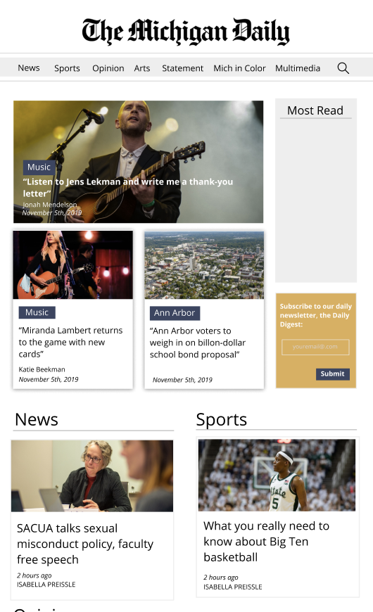
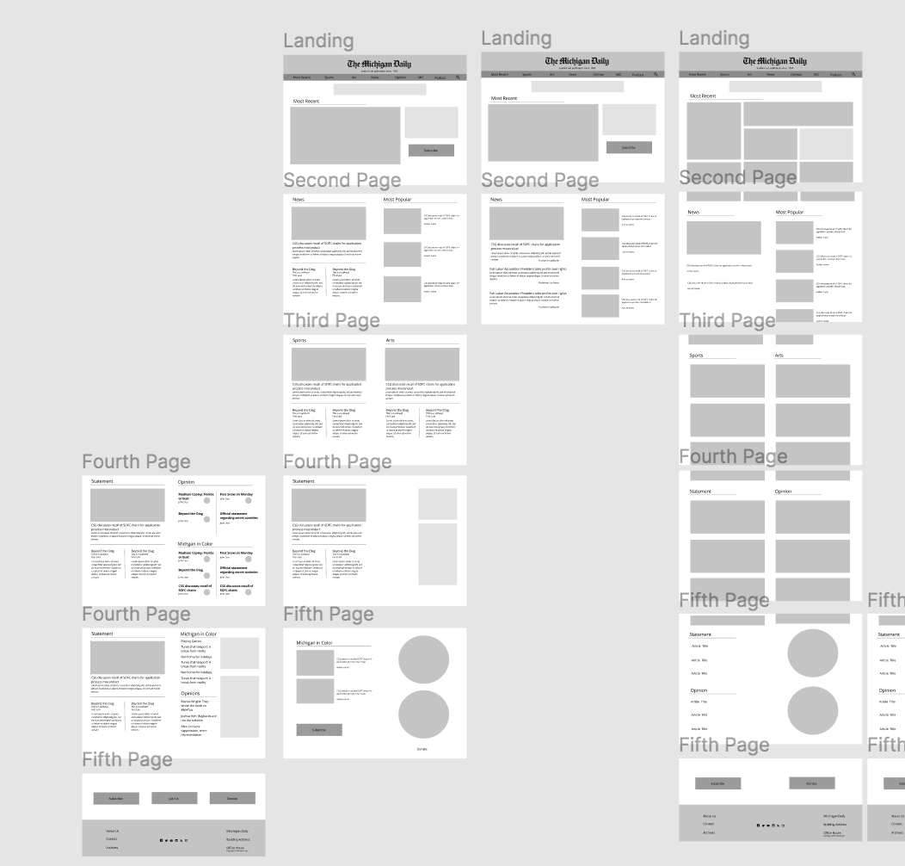

Michigan Daily Projects

Style Guide:
I am currently working with a group of 4 other designers on the Michigan Daily Web Team to create a brand identity throughout all Michigan Daily web products (Website, Mobile Application, Grade Guide, etc).One of our main goals this semester has to start ideating a new style guide as a resource for other designers and interested audiences to gain insight on the design choices and brand identity guidelines at the Daily.
Product Purpose(s)
To do this, we identified the main purposes of each of our products by asking the questions: What are users looking for from our products? What does the Michigan Daily hope to gain from our products?Overall - Generate revenue (Daily), create accessible information for the Ann Arbor community, informing citizens of news/sports/current events, giving diverse perspectives on topics, building trust and credibility
Website - Generate revenue (primary), create accessible information for the Ann Arbor community, informing citizens of news/sports/current events, giving diverse perspectives on topics, reporter portfolio (journalists)
Mobile App - multimedia content (podcasts), generate revenue (secondary/tertiary source), create accessible information for the Ann Arbor community, informing citizens of news/sports/current events
Grade Guide - tool for students registering for classes, generate revenue (secondary/tertiary source), information source
We also evaluated the lack of identity our products currently contain. We then decided on coherent typography and color palette choices and identified structural problems with each product that we aimed to fix.
Style Guide Goals
- To create a resource for developers and designers interactive
- Make it fun for developers, designers to explore
- Replicable (certain elements like colors can be easily copied and pasted)
- Inform developers of design decisions
Website:
As part of our re-branding on the website, we were also tasked to redesign the current Michigan Daily website. When looking at the website, we identified many user experience flaws and structural issues that we aimed to fix. Among these included implementing a better grid system to eliminate a lot of the dead space within the layout, to redesign the header/landing to be more consistent with brand identity and to be more accessible to users, the card displays, author pages, author bios, navigational system, social media icons and placement, footer, etc. This is also an ongoing project & has not yet been completed. Below is the beginning drafts of our wireframes.